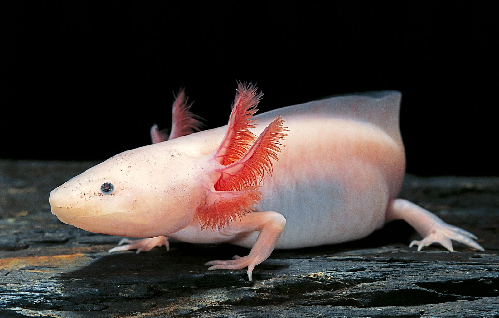

Albino Axolotl
A neotenic salamender from Mexico.
Axolotl, (Ambystoma mexicanum), salamander of the family Ambystomatidae (order Caudata), notable for its permanent retention of larval features, such as external gills. The species is found only in Lake Xochimilco, within Mexico City, where it is classified as a critically endangered species.